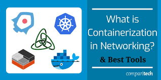

What is Containerization?

Image Source: https://www.ibm.com/
Containerization is defined as a form of operating system virtualization, through which applications are run in isolated user spaces called containers, all using the same shared operating system (OS). A container is essentially a fully packaged and portable computing environment:
- Everything an application needs to run – its binaries, libraries, configuration files and dependencies – is encapsulated and isolated in its container.
- The container itself is abstracted away from the host OS, with only limited access to underlying resources – much like a lightweight VM.
- As a result, the containerized application can be run on various types of infrastructure—on bare metal, within VMs, and in the cloud—without needing to refactor it for each environment.
How Does Containerization Actually Work?
Each container is an executable package of software, running on top of a host OS. A host(s) may support many containers (tens, hundreds or even thousands) concurrently, such as in the case of a complex microservices architecture that uses numerous containerized ADCs. This setup works because all containers run minimal, resource-isolated processes that others cannot access.
Think of a containerized application as the top layer of a multi-tier cake:
- At the bottom, there is the hardware of the infrastructure in question, including its CPU(s), disk storage and network interfaces.
- Above that, there is the host OS and its kernel – the latter serves as a bridge between the software of the OS and the hardware of the underlying system.
- The container engine and its minimal guest OS, which are particular to the containerization technology being used, sit atop the host OS.
- At the very top are the binaries and libraries (bins/libs) for each application and the apps themselves, running in their isolated user spaces (containers).
What Are the Main Benefits of Containerization?
Benefits are:
- Portability between different platforms and clouds—it’s truly write once, run anywhere.
- Efficiency through using far fewer resources than VMs and delivering higher utilization of compute resources.
- Agility that allows developers to integrate with their existing DevOps environment.
- Higher speed in the delivery of enhancements. Containerizing monolithic applications using microservices helps development teams create functionality with its own life cycle and scaling policies.
- Improved security by isolating applications from the host system and from each other.
- Faster app start-up and easier scaling.
- Flexibility to work on virtualized infrastructures or on bare metal servers.
- Easier management since install, upgrade, and rollback processes are built into the Kubernetes platform.
Why are containers important?
Containerization is one of the latest developments in the evolution of cloud computing. Many organizations, both large and small, are looking at containers as a means to improve application life-cycle management through capabilities such as continuous integration and continuous delivery. Also, certain implementations of containers conform to the principles of open source, which is appealing to organizations wary of being locked-in to a specific vendor.
Containers are also the foundation of a private cloud and, just like the early days of cloud computing, are becoming a game changer for many organizations. Private cloud becomes the platform of choice to deliver the security and control required while simultaneously enabling the consumption of multiple cloud services. This is typical of situations where organizations are running both existing application workloads and new application workloads in the cloud.
Containers help to satisfy three key use cases that reflect what enterprises require to run their applications in the cloud:
- Modernize your existing applications.
- Create new cloud native enterprise applications.
- Open your data center to work with cloud services.